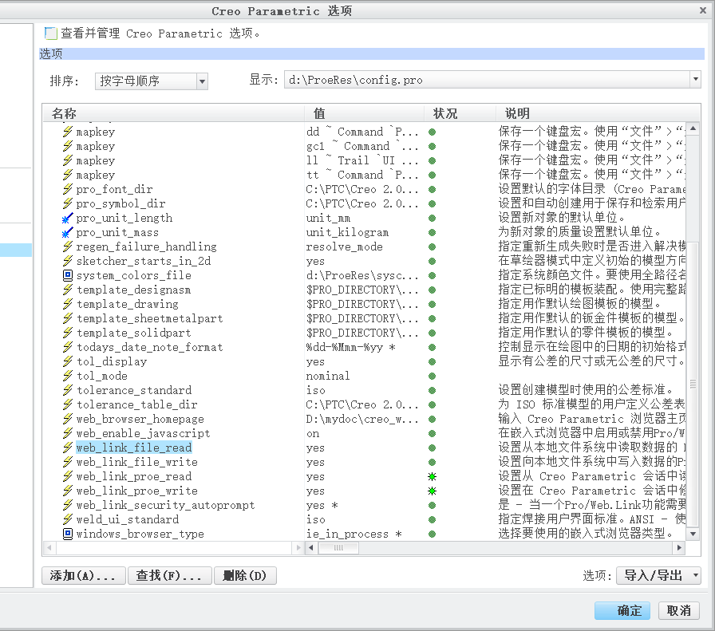
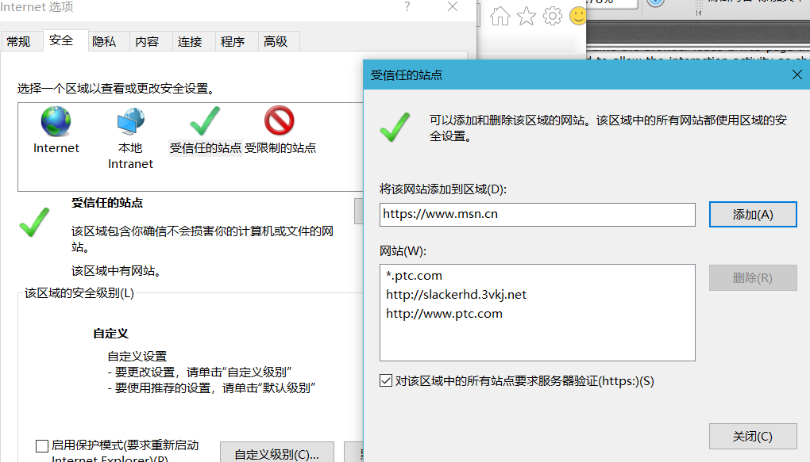
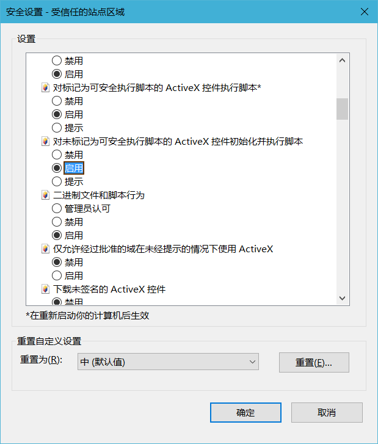

安装配置方法：
1.首先请安装Weblink。
2.设置web_link_file_read、web_link_file_write、web_link_proe_read、web_link_proe_write、web_link_security_autoprompt以及windows_browser_type属性，如图所示。

3.设置IE安全选项，将http://www.hudi.site加入受信任站点。

4.设置IE安全选项，将“对为标记为可安全执行脚本的ActiveX控件初始化并执行脚本”选项设置为启用。
